01Eseti és rendszeres kórházi látogatások
6 Amigos városban önkénteseink rendszeresen látogatják a kórházban gyógyuló gyerekeket, és ha tehetjük, más kórházakba is szívesen ellátogatunk.
Rendszeres és eseti bevetésekBudapestDebrecenMiskolcPécsSzegedSzombathely